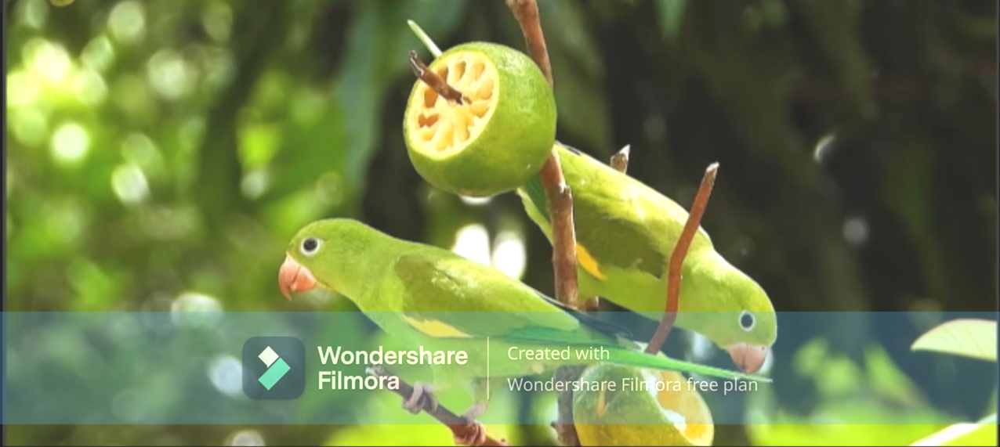
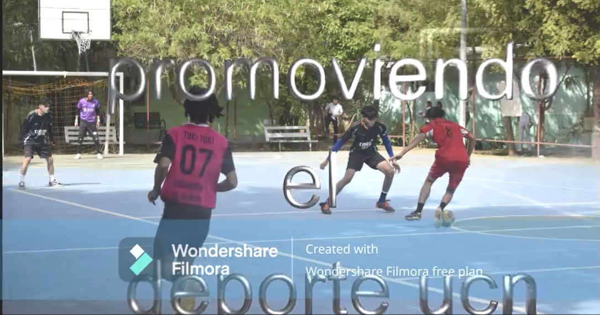
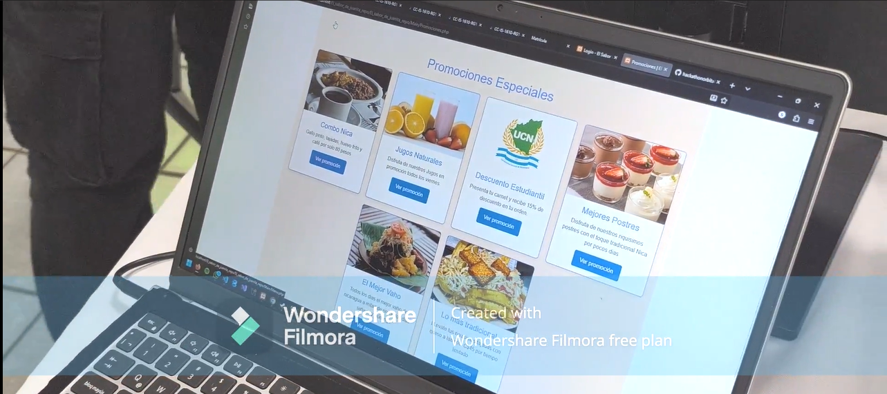

“Desarrollo de Multimedia I”
Inclusión
El desarrollo multimedia consiste en la creación de productos interactivos que combinan diversos medios como texto, imágenes, audio, video, animaciones y gráficos. Su objetivo es comunicar información de manera atractiva y comprensible para el usuario. Ejemplos comunes incluyen aplicaciones educativas, sitios web interactivos, videojuegos, simuladores, y recursos de aprendizaje en línea.
Para crear Multimedia
Aplicación de la Inclusión en el Desarrollo Multimedia Para crear productos multimedia inclusivos, se deben aplicar buenas prácticas como: Subtítulos y transcripciones en videos para personas con discapacidad auditiva. Narraciones de texto o descripciones de imágenes para quienes tienen discapacidad visual. Interfaz adaptable a diferentes tamaños de pantalla o dispositivos de asistencia.
Beneficios
Beneficios de la Inclusión en el Desarrollo Multimedia Mejora la experiencia del usuario al permitir un acceso más amplio. Cumple con normas internacionales de accesibilidad digital (como las WCAG). Promueve la igualdad de oportunidades y reduce la brecha digital. Fortalece la responsabilidad social y ética de los desarrolladores. Aumenta el alcance y aceptación de los productos digitales.

Desarrollo Mulmedia
El desarrollo multimedia y la inclusión en la informática no son conceptos separados, sino complementarios. Crear tecnología accesible, educativa y diversa permite que la innovación digital sea verdaderamente para todos. Un desarrollador comprometido con la inclusión no solo diseña software funcional, sino herramientas que transforman vidas y fomentan la equidad en el mundo digital. 